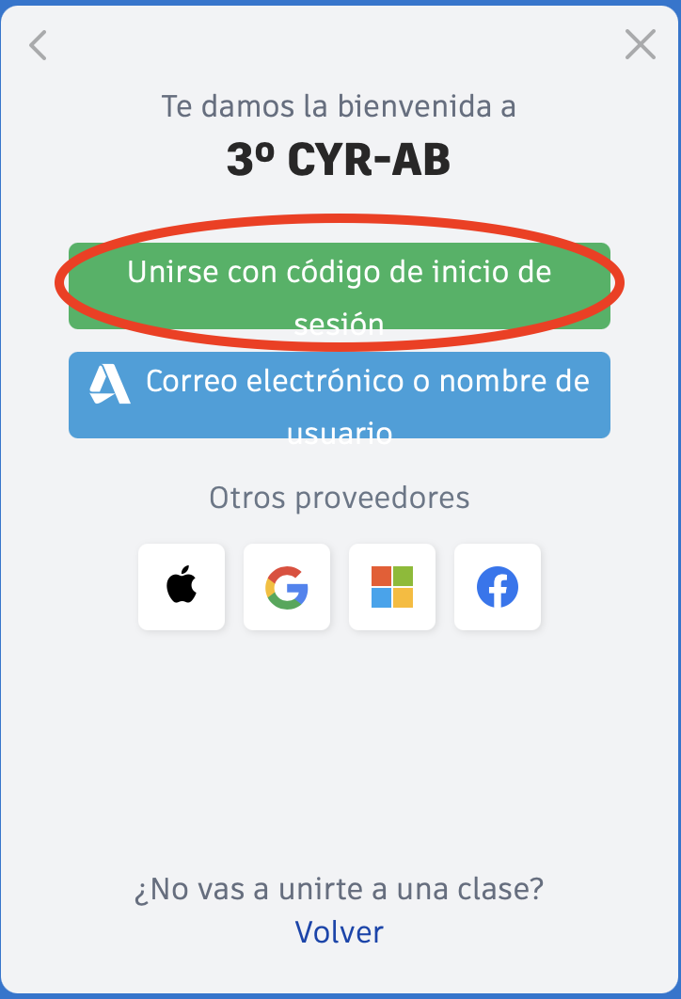
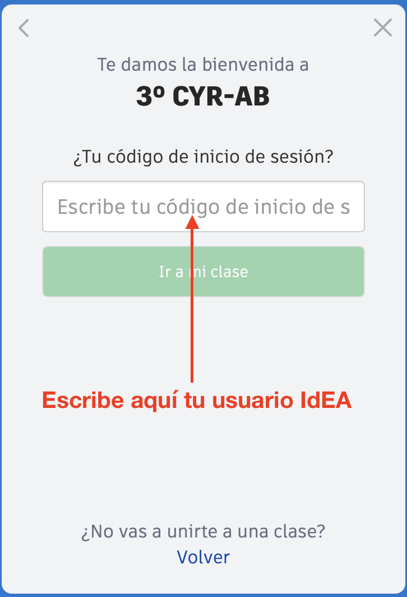
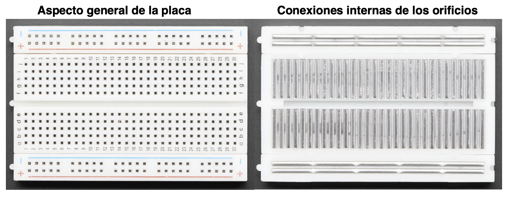
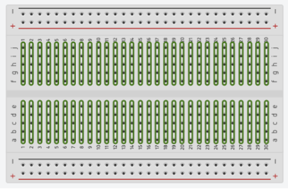
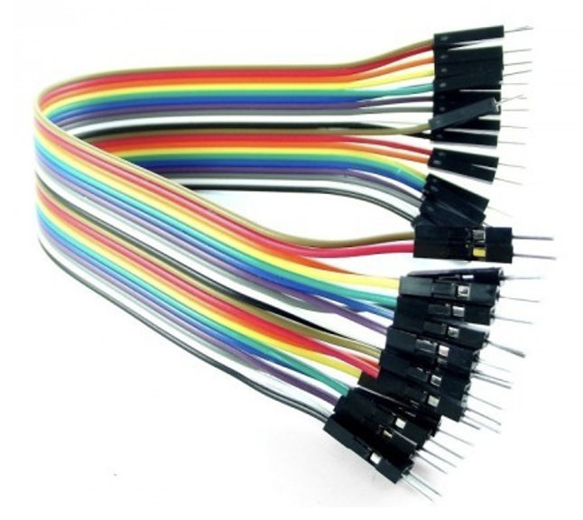
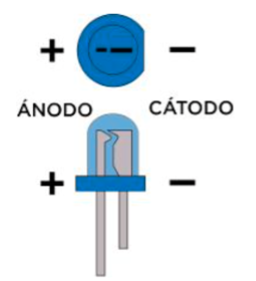
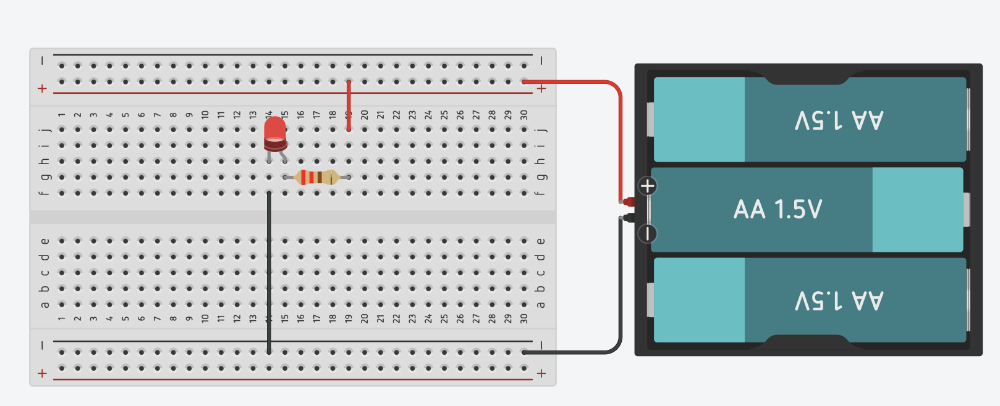

Antes de programar, el circuito
Para que un programa encienda un LED, primero tiene que existir un circuito: un camino cerrado por el que circula la corriente. En esta sesión aprenderás a montar circuitos sencillos en un simulador, así puedes probar todo sin gastar componentes ni arriesgarte a romper nada.
¿Y en clase, cablearemos?
Muy poco: en el aula usaremos el shield, que trae los circuitos ya montados por dentro. La protoboard la vas a dominar aquí, en el simulador; y en las próximas sesiones «abrirás el capó» del shield montando en TinkerCAD los circuitos que él esconde.
1. Entra en TinkerCAD
Usaremos TinkerCAD, un simulador muy sencillo en el que se ven los componentes reales (no solo símbolos). Para entrar en nuestra clase, usa el enlace de la tarea de Google Classroom y pulsa «Unirse con apodo».

Después, escribe tu usuario IdEA (el mismo de Classroom, pero sin
la parte @g.educaand.es) y pulsa «¡Soy yo!».

2. La placa de pruebas (protoboard)
La protoboard (o placa de pruebas) es un rectángulo lleno de orificios. Lo importante es que esos orificios están conectados por dentro de una forma concreta: así puedes unir componentes y cables sin soldar, y desmontarlo cuando quieras.

En TinkerCAD hay tres tamaños de placa. Usaremos siempre la mediana (en TinkerCAD se llama «placa de pruebas pequeña»), que ya trae los raíles de alimentación arriba y abajo.

Las tres zonas de la placa

Buses o raíles de alimentación — las filas de arriba y abajo, marcadas con + y −. Todos los orificios de cada una de estas filas están unidos en horizontal. Aquí conectamos la energía (el + y el − de la fuente) y así la tenemos disponible a lo largo de toda la placa.

Tiras de conectores — el centro de la placa. Son grupos de 5 orificios unidos en vertical. El canal del medio separa la mitad de arriba de la de abajo.

Regla imprescindible
Las dos patillas de un mismo componente NUNCA van en la misma tira de 5. Si las pones en el mismo grupo, es como unirlas con un cable y el componente no hace nada: la corriente tiene que entrar por una patilla y salir por la otra.
Cables puente (jumpers)
Cuando dos orificios que necesitas unir quedan lejos, usamos cables puente (o «jumpers»). En TinkerCAD basta con hacer clic en un orificio y en otro para tender un cable entre ellos. En los montajes reales, tu kit ya trae cables de colores listos para pinchar (los llamados cables DuPont).

3. El LED y la resistencia
Un LED es un diodo que emite luz. Tiene polaridad: la patita larga (ánodo, +) y la corta (cátodo, −). Si lo conectas al revés, no luce. Y siempre se acompaña de una resistencia, que limita la corriente para que el LED no se queme.

Regla de oro
Un LED nunca va solo: siempre lleva una resistencia en serie (por ejemplo, de 220 Ω). Sin ella, el LED recibe demasiada corriente y se estropea.
Este es el circuito que vamos a montar: una fuente que alimenta un LED con su resistencia en serie. Con símbolos se dibuja así:

Práctica guiada · Monta UN LED en la protoboard, paso a paso
- Crea un circuito nuevo en TinkerCAD, llámalo exactamente S2 práctica y arrastra una protoboard mediana.
- Coloca el LED con cada patilla en una columna distinta, de modo que las dos patillas no se conecten entre sí. Identifica cuál es el ánodo (patilla larga).
- Coloca la resistencia de 220 Ω en horizontal: una patilla en la misma columna que el ánodo del LED y la otra unas columnas a la derecha.
- Con un cable puente, une ese otro extremo de la resistencia con el raíl + (el rojo).
- Con otro cable puente, une la columna del cátodo con el raíl − (el negro).
- Alimenta los raíles con un portapilas (más adelante, en la S4, será la placa Arduino): el + al raíl + y el − al raíl −.
- Pulsa «Iniciar simulación»: el LED debe iluminarse.
Bien montado en TinkerCAD, tu circuito se parecerá a este:

Prueba a girar el LED del revés: verás que no luce (es la polaridad).
Tarea S2 · Dos LEDs en TinkerCAD
Ahora repítelo tú con dos LEDs de colores distintos, cada uno con su resistencia, encendidos a la vez sobre la misma protoboard. Comparte los dos raíles (+ y −) para alimentar los dos LEDs, y recuerda: las dos patillas de cada LED en tiras distintas. Nombra el proyecto exactamente así: S2 dos LEDs. No hace falta que entregues archivo: tu profesor ve tus proyectos de TinkerCAD por el nombre.
Si algo no enciende, repasa
- ¿Las dos patillas de un componente están en tiras distintas (no en la misma)?
- ¿El LED está en el sentido correcto (ánodo hacia la resistencia y el +)?
- ¿Los raíles + y − están alimentados desde la fuente?
Extensión (opcional)
Añade un tercer LED y coloca todos los cátodos en el mismo raíl negativo de la protoboard, usando un único cable de vuelta al negativo. ¿Funciona igual? Piensa por qué.